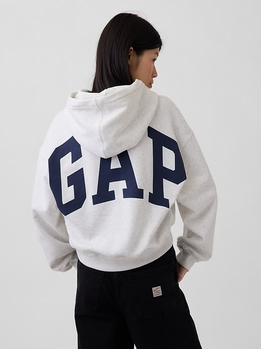
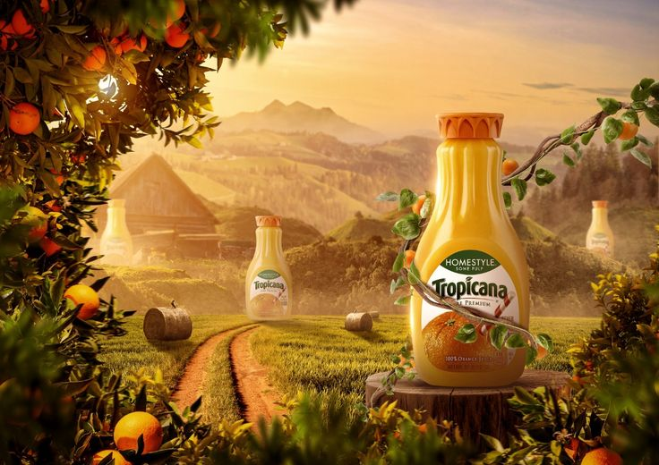
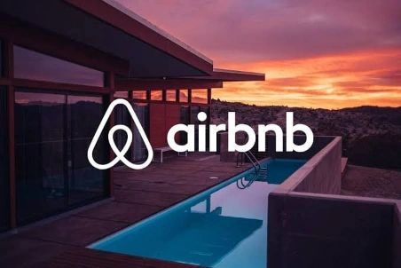

Pensez comme une
Marque Premium.
Découvrez pourquoi le design est le levier de conversion le plus sous-estimé. Études de cas, psychologie visuelle et stratégies pour distancer vos concurrents.
Rebrandings Légendaires

Le nouveau logo à 1 million de dollars de Pepsi : Pur gaspillage ou masterclass ?
Quand une virgule change de position et coûte une fortune. Décryptage d'un document stratégique devenu tristement viral.

De Twitter à X : le rebranding qui a effacé 4 milliards de valeur
Suicide commercial ou vision d'un nouvel empire ? Retour sur la nuit où l'oiseau bleu emblématique est mort.

Le rebranding éclair de Gap annulé en 6 jours : Désastre ou leçon ?
Comment l'un des plus grands détaillants mondiaux a capitulé en une semaine face à la colère d'internet et la puissance du crowdsourcing.

Le packaging à 50 millions de pertes de Tropicana : Erreur fatale ?
Une briquette qui a coûté plus cher qu'un film hollywoodien. Une cruelle leçon sur la fidélité client et la mémoire visuelle.

Le logo controversé d'Airbnb devenu iconique : Triomphe du design
Le jour où Internet a vu des fesses dans un logo. Comment une mauvaise blague est devenue une masterclass en appartenance.
Vous avez lu la théorie.
Passez maintenant à la pratique.
On peut analyser les erreurs de vos concurrents pendant des heures. Ou on peut s'asseoir 20 minutes ensemble et corriger les vôtres.